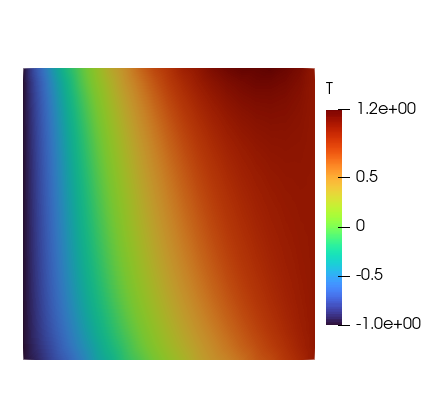

Discontinuous Galerkin heat equation

Figure 1: Temperature field on the unit square with an internal uniform heat source solved with inhomogeneous Dirichlet boundary conditions on the left and right boundaries and flux on the top and bottom boundaries.
This example is also available as a Jupyter notebook: dg_heat_equation.ipynb.
This example was developed as part of the Google summer of code funded project "Discontinuous Galerkin Infrastructure For the finite element toolbox Ferrite.jl"
Introduction
This tutorial extends Tutorial 1: Heat equation by using the discontinuous Galerkin method. The reader is expected to have gone through Tutorial 1: Heat equation before proceeding with this tutorial. The main differences between the two tutorials are the interface integral terms in the weak form, the boundary conditions, and some implementation differences explained in the commented program below.
The strong form considered in this tutorial is given as follows
\[ -\boldsymbol{\nabla} \cdot [\boldsymbol{\nabla}(u)] = 1 \quad \textbf{x} \in \Omega,\]
with the inhomogeneous Dirichlet boundary conditions
\[u(\textbf{x}) = 1 \quad \textbf{x} \in \partial \Omega_D^+ = \lbrace\textbf{x} : x_1 = 1.0\rbrace, \\ u(\textbf{x}) = -1 \quad \textbf{x} \in \partial \Omega_D^- = \lbrace\textbf{x} : x_1 = -1.0\rbrace,\]
and Neumann boundary conditions
\[[\boldsymbol{\nabla} (u(\textbf{x}))] \cdot \boldsymbol{n} = 1 \quad \textbf{x} \in \partial \Omega_N^+ = \lbrace\textbf{x} : x_2 = 1.0\rbrace, \\ [\boldsymbol{\nabla} (u(\textbf{x}))] \cdot \boldsymbol{n} = -1 \quad \textbf{x} \in \partial \Omega_N^- = \lbrace\textbf{x} : x_2 = -1.0\rbrace,\]
The following definitions of average and jump on interfaces between elements are adopted in this tutorial:
\[ \{u\} = \frac{1}{2}(u^+ + u^-),\quad \llbracket u\rrbracket = u^+ \boldsymbol{n}^+ + u^- \boldsymbol{n}^-\\\]
where $u^+$ and $u^-$ are the temperature on the two sides of the interface.
Derivation of the weak form for homogeneous Dirichlet boundary condition
Defining $\boldsymbol{\sigma}$ as the gradient of the temperature field the equation can be expressed as
\[ \boldsymbol{\sigma} = \boldsymbol{\nabla} (u),\\ -\boldsymbol{\nabla} \cdot \boldsymbol{\sigma} = 1,\]
Multiplying by test functions $ \boldsymbol{\tau} $ and $ \delta u $ respectively and integrating over the domain,
\[ \int_\Omega \boldsymbol{\sigma} \cdot \boldsymbol{\tau} \,\mathrm{d}\Omega = \int_\Omega [\boldsymbol{\nabla} (u)] \cdot \boldsymbol{\tau} \,\mathrm{d}\Omega,\\ -\int_\Omega \boldsymbol{\nabla} \cdot \boldsymbol{\sigma} \delta u \,\mathrm{d}\Omega = \int_\Omega \delta u \,\mathrm{d}\Omega,\]
Integrating by parts and applying divergence theorem,
\[ \int_\Omega \boldsymbol{\sigma} \cdot \boldsymbol{\tau} \,\mathrm{d}\Omega = -\int_\Omega u (\boldsymbol{\nabla} \cdot \boldsymbol{\tau}) \,\mathrm{d}\Omega + \int_\Gamma \hat{u} \boldsymbol{\tau} \cdot \boldsymbol{n} \,\mathrm{d}\Gamma,\\ \int_\Omega \boldsymbol{\sigma} \cdot [\boldsymbol{\nabla} (\delta u)] \,\mathrm{d}\Omega = \int_\Omega \delta u \,\mathrm{d}\Omega + \int_\Gamma \delta u \boldsymbol{\hat{\sigma}} \cdot \boldsymbol{n} \,\mathrm{d}\Gamma,\]
Where $\boldsymbol{n}$ is the outwards pointing normal, $\Gamma$ is the union of the elements' boundaries, and $\hat{u}, \, \hat{\sigma}$ are the numerical fluxes. Substituting the integrals of form
\[ \int_\Gamma q \boldsymbol{\phi} \cdot \boldsymbol{n} \,\mathrm{d}\Gamma = \int_\Gamma \llbracket q\rrbracket \cdot \{\boldsymbol{\phi}\} \,\mathrm{d}\Gamma + \int_{\Gamma^0} \{q\} \llbracket \boldsymbol{\phi}\rrbracket \,\mathrm{d}\Gamma^0,\]
where $\Gamma^0 : \Gamma \setminus \partial \Omega$, and the jump of the vector-valued field $\boldsymbol{\phi}$ is defined as
\[ \llbracket \boldsymbol{\phi}\rrbracket = \boldsymbol{\phi}^+ \cdot \boldsymbol{n}^+ + \boldsymbol{\phi}^- \cdot \boldsymbol{n}^-\\\]
with the jumps and averages results in
\[ \int_\Omega \boldsymbol{\sigma} \cdot \boldsymbol{\tau} \,\mathrm{d}\Omega = -\int_\Omega u (\boldsymbol{\nabla} \cdot \boldsymbol{\tau}) \,\mathrm{d}\Omega + \int_\Gamma \llbracket \hat{u}\rrbracket \cdot \{\boldsymbol{\tau}\} \,\mathrm{d}\Gamma + \int_{\Gamma^0} \{\hat{u}\} \llbracket \boldsymbol{\tau}\rrbracket \,\mathrm{d}\Gamma^0,\\ \int_\Omega \boldsymbol{\sigma} \cdot [\boldsymbol{\nabla} (\delta u)] \,\mathrm{d}\Omega = \int_\Omega \delta u \,\mathrm{d}\Omega + \int_\Gamma \llbracket \delta u\rrbracket \cdot \{\hat{\boldsymbol{\sigma}}\} \,\mathrm{d}\Gamma + \int_{\Gamma^0} \{\delta u\} \llbracket \hat{\boldsymbol{\sigma}}\rrbracket \,\mathrm{d}\Gamma^0,\]
Integrating $ \int_\Omega [\boldsymbol{\nabla} (u)] \cdot \boldsymbol{\tau} \,\mathrm{d}\Omega $ by parts and applying divergence theorem without using numerical flux, then substitute in the equation to obtain a weak form.
\[ \int_\Omega \boldsymbol{\sigma} \cdot \boldsymbol{\tau} \,\mathrm{d}\Omega = \int_\Omega [\boldsymbol{\nabla} (u)] \cdot \boldsymbol{\tau} \,\mathrm{d}\Omega + \int_\Gamma \llbracket \hat{u} - u\rrbracket \cdot \{\boldsymbol{\tau}\} \,\mathrm{d}\Gamma + \int_{\Gamma^0} \{\hat{u} - u\} \llbracket \boldsymbol{\tau}\rrbracket \,\mathrm{d}\Gamma^0,\\ \int_\Omega \boldsymbol{\sigma} \cdot [\boldsymbol{\nabla} (\delta u)] \,\mathrm{d}\Omega = \int_\Omega \delta u \,\mathrm{d}\Omega + \int_\Gamma \llbracket \delta u\rrbracket \cdot \{\hat{\boldsymbol{\sigma}}\} \,\mathrm{d}\Gamma + \int_{\Gamma^0} \{\delta u\} \llbracket \hat{\boldsymbol{\sigma}}\rrbracket \,\mathrm{d}\Gamma^0,\]
Substituting
\[ \boldsymbol{\tau} = \boldsymbol{\nabla} (\delta u),\\\]
results in
\[ \int_\Omega \boldsymbol{\sigma} \cdot [\boldsymbol{\nabla} (\delta u)] \,\mathrm{d}\Omega = \int_\Omega [\boldsymbol{\nabla} (u)] \cdot [\boldsymbol{\nabla} (\delta u)] \,\mathrm{d}\Omega + \int_\Gamma \llbracket \hat{u} - u\rrbracket \cdot \{\boldsymbol{\nabla} (\delta u)\} \,\mathrm{d}\Gamma + \int_{\Gamma^0} \{\hat{u} - u\} \llbracket \boldsymbol{\nabla} (\delta u)\rrbracket \,\mathrm{d}\Gamma^0,\\ \int_\Omega \boldsymbol{\sigma} \cdot [\boldsymbol{\nabla} (\delta u)] \,\mathrm{d}\Omega = \int_\Omega \delta u \,\mathrm{d}\Omega + \int_\Gamma \llbracket \delta u\rrbracket \cdot \{\hat{\boldsymbol{\sigma}}\} \,\mathrm{d}\Gamma + \int_{\Gamma^0} \{\delta u\} \llbracket \hat{\boldsymbol{\sigma}}\rrbracket \,\mathrm{d}\Gamma^0,\]
Combining the two equations,
\[ \int_\Omega [\boldsymbol{\nabla} (u)] \cdot [\boldsymbol{\nabla} (\delta u)] \,\mathrm{d}\Omega + \int_\Gamma \llbracket \hat{u} - u\rrbracket \cdot \{\boldsymbol{\nabla} (\delta u)\} \,\mathrm{d}\Gamma + \int_{\Gamma^0} \{\hat{u} - u\} \llbracket \boldsymbol{\nabla} (\delta u)\rrbracket \,\mathrm{d}\Gamma^0 - \int_\Gamma \llbracket \delta u\rrbracket \cdot \{\hat{\boldsymbol{\sigma}}\} \,\mathrm{d}\Gamma - \int_{\Gamma^0} \{\delta u\} \llbracket \hat{\boldsymbol{\sigma}}\rrbracket \,\mathrm{d}\Gamma^0 = \int_\Omega \delta u \,\mathrm{d}\Omega,\\\]
The numerical fluxes chosen for the interior penalty method are $\boldsymbol{\hat{\sigma}} = \{\boldsymbol{\nabla} (u)\} - \alpha(\llbracket u\rrbracket)$ on $\Gamma$, $\hat{u} = \{u\}$ on the interfaces between elements $\Gamma^0 : \Gamma \setminus \partial \Omega$, and $\hat{u} = 0$ on $\partial \Omega$. Such choice results in $\{\hat{\boldsymbol{\sigma}}\} = \{\boldsymbol{\nabla} (u)\} - \alpha(\llbracket u\rrbracket)$, $\llbracket \hat{u}\rrbracket = 0$, $\{\hat{u}\} = \{u\}$, $\llbracket \hat{\boldsymbol{\sigma}}\rrbracket = 0$ and the equation becomes
\[ \int_\Omega [\boldsymbol{\nabla} (u)] \cdot [\boldsymbol{\nabla} (\delta u)] \,\mathrm{d}\Omega - \int_\Gamma \llbracket u\rrbracket \cdot \{\boldsymbol{\nabla} (\delta u)\} \,\mathrm{d}\Gamma - \int_\Gamma \llbracket \delta u\rrbracket \cdot \{\boldsymbol{\nabla} (u)\} - \llbracket \delta u\rrbracket \cdot \alpha(\llbracket u\rrbracket) \,\mathrm{d}\Gamma = \int_\Omega \delta u \,\mathrm{d}\Omega,\\\]
Where
\[ \alpha(\llbracket u\rrbracket) = \mu \llbracket u\rrbracket\]
Where $\mu = \eta h_e^{-1}$, the weak form becomes
\[ \int_\Omega [\boldsymbol{\nabla} (u)] \cdot [\boldsymbol{\nabla}] (\delta u) \,\mathrm{d}\Omega - \int_\Gamma \llbracket u \rrbracket \cdot \{\boldsymbol{\nabla} (\delta u)\} + \llbracket \delta u \rrbracket \cdot \{\boldsymbol{\nabla} (u)\} \,\mathrm{d}\Gamma + \int_\Gamma \frac{\eta}{h_e} \llbracket u\rrbracket \cdot \llbracket \delta u\rrbracket \,\mathrm{d}\Gamma = \int_\Omega \delta u \,\mathrm{d}\Omega,\\\]
Since $\partial \Omega$ is constrained with both Dirichlet and Neumann boundary conditions the term $\int_{\partial \Omega} [\boldsymbol{\nabla} (u)] \cdot \boldsymbol{n} \delta u \,\mathrm{d} \Omega$ can be expressed as an integral over $\partial \Omega_N$, where $\partial \Omega_N$ is the boundaries with only prescribed Neumann boundary condition, The resulting weak form is given given as follows: Find $u \in \mathbb{U}$ such that
\[ \int_\Omega [\boldsymbol{\nabla} (u)] \cdot [\boldsymbol{\nabla} (\delta u)] \,\mathrm{d}\Omega - \int_{\Gamma^0} \llbracket u\rrbracket \cdot \{\boldsymbol{\nabla} (\delta u)\} + \llbracket \delta u\rrbracket \cdot \{\boldsymbol{\nabla} (u)\} \,\mathrm{d}\Gamma^0 + \int_{\Gamma^0} \frac{\eta}{h_e} \llbracket u\rrbracket \cdot \llbracket \delta u\rrbracket \,\mathrm{d}\Gamma^0 = \int_\Omega \delta u \,\mathrm{d}\Omega + \int_{\partial \Omega_N} ([\boldsymbol{\nabla} (u)] \cdot \boldsymbol{n}) \delta u \,\mathrm{d} \partial \Omega_N,\\\]
where $h_e$ is the characteristic size (the diameter of the interface), and $\eta$ is a large enough positive number independent of $h_e$ [3], $\delta u \in \mathbb{T}$ is a test function, and where $\mathbb{U}$ and $\mathbb{T}$ are suitable trial and test function sets, respectively. We use the value $\eta = (1 + O)^{D}$, where $O$ is the polynomial order and $D$ the dimension, in this tutorial.
More details on DG formulations for elliptic problems can be found in [4].
Commented Program
Now we solve the problem in Ferrite. What follows is a program spliced with comments. The full program, without comments, can be found in the next section.
First we load Ferrite and other packages, and generate grid just like the heat equation tutorial
using Ferrite, SparseArrays
dim = 2;
grid = generate_grid(Quadrilateral, ntuple(_ -> 20, dim));We construct the topology information which is used later for generating the sparsity pattern for stiffness matrix.
topology = ExclusiveTopology(grid);Trial and test functions
CellValues, FacetValues, and InterfaceValues facilitate the process of evaluating values and gradients of test and trial functions (among other things). To define these we need to specify an interpolation space for the shape functions. We use DiscontinuousLagrange functions based on the two-dimensional reference quadrilateral. We also define a quadrature rule based on the same reference element. We combine the interpolation and the quadrature rule to CellValues and InterfaceValues object. Note that InterfaceValues object contains two FacetValues objects which can be used individually.
order = 1;
ip = DiscontinuousLagrange{RefQuadrilateral, order}();
qr = QuadratureRule{RefQuadrilateral}(2);For FacetValues and InterfaceValues we use FacetQuadratureRule
facet_qr = FacetQuadratureRule{RefQuadrilateral}(2);
cellvalues = CellValues(qr, ip);
facetvalues = FacetValues(facet_qr, ip);
interfacevalues = InterfaceValues(facet_qr, ip);Penalty term parameters
We define functions to calculate the diameter of a set of points, used to calculate the characteristic size $h_e$ in the assembly routine.
getdistance(p1::Vec{N, T},p2::Vec{N, T}) where {N, T} = norm(p1-p2);
getdiameter(cell_coords::Vector{Vec{N, T}}) where {N, T} = maximum(getdistance.(cell_coords, reshape(cell_coords, (1,:))));Degrees of freedom
Degrees of freedom distribution is handled using DofHandler as usual
dh = DofHandler(grid)
add!(dh, :u, ip)
close!(dh);However, when generating the sparsity pattern we need to pass the topology and the cross-element coupling matrix when we're using discontinuous interpolations. The cross-element coupling matrix is of size [1,1] in this case as we have only one field and one DofHandler.
K = allocate_matrix(dh, topology = topology, interface_coupling = trues(1,1));Boundary conditions
The Dirichlet boundary conditions are treated as usual by a ConstraintHandler.
ch = ConstraintHandler(dh)
add!(ch, Dirichlet(:u, getfacetset(grid, "right"), (x, t) -> 1.0))
add!(ch, Dirichlet(:u, getfacetset(grid, "left"), (x, t) -> -1.0))
close!(ch);Furthermore, we define $\partial \Omega_N$ as the union of the facet sets with Neumann boundary conditions for later use
∂Ωₙ = union(
getfacetset(grid, "top"),
getfacetset(grid, "bottom"),
);Assembling the linear system
Now we have all the pieces needed to assemble the linear system, $K u = f$. Assembling of the global system is done by looping over i) all the elements in order to compute the element contributions $K_e$ and $f_e$, ii) all the interfaces to compute their contributions $K_i$, and iii) all the Neumann boundary facets to compute their contributions $f_e$. All these local contributions are then assembled into the appropriate place in the global $K$ and $f$.
Local assembly
We define the functions
assemble_element!to compute the contributions $K_e$ and $f_e$ of volume integrals over an element usingcellvalues.assemble_interface!to compute the contribution $K_i$ of surface integrals over an interface usinginterfacevalues.assemble_boundary!to compute the contribution $f_e$ of surface integrals over a boundary facet usingFacetValues.
function assemble_element!(Ke::Matrix, fe::Vector, cellvalues::CellValues)
n_basefuncs = getnbasefunctions(cellvalues)
# Reset to 0
fill!(Ke, 0)
fill!(fe, 0)
# Loop over quadrature points
for q_point in 1:getnquadpoints(cellvalues)
# Quadrature weight
dΩ = getdetJdV(cellvalues, q_point)
# Loop over test shape functions
for i in 1:n_basefuncs
δu = shape_value(cellvalues, q_point, i)
∇δu = shape_gradient(cellvalues, q_point, i)
# Add contribution to fe
fe[i] += δu * dΩ
# Loop over trial shape functions
for j in 1:n_basefuncs
∇u = shape_gradient(cellvalues, q_point, j)
# Add contribution to Ke
Ke[i, j] += (∇δu ⋅ ∇u) * dΩ
end
end
end
return Ke, fe
end
function assemble_interface!(Ki::Matrix, iv::InterfaceValues, μ::Float64)
# Reset to 0
fill!(Ki, 0)
# Loop over quadrature points
for q_point in 1:getnquadpoints(iv)
# Get the normal to facet A
normal = getnormal(iv, q_point)
# Get the quadrature weight
dΓ = getdetJdV(iv, q_point)
# Loop over test shape functions
for i in 1:getnbasefunctions(iv)
# Multiply the jump by the negative normal to get the definition from the theory section.
δu_jump = shape_value_jump(iv, q_point, i) * (-normal)
∇δu_avg = shape_gradient_average(iv, q_point, i)
# Loop over trial shape functions
for j in 1:getnbasefunctions(iv)
# Multiply the jump by the negative normal to get the definition from the theory section.
u_jump = shape_value_jump(iv, q_point, j) * (-normal)
∇u_avg = shape_gradient_average(iv, q_point, j)
# Add contribution to Ki
Ki[i, j] += -(δu_jump ⋅ ∇u_avg + ∇δu_avg ⋅ u_jump)*dΓ + μ * (δu_jump ⋅ u_jump) * dΓ
end
end
end
return Ki
end
function assemble_boundary!(fe::Vector, fv::FacetValues)
# Reset to 0
fill!(fe, 0)
# Loop over quadrature points
for q_point in 1:getnquadpoints(fv)
# Get the normal to facet A
normal = getnormal(fv, q_point)
# Get the quadrature weight
∂Ω = getdetJdV(fv, q_point)
# Loop over test shape functions
for i in 1:getnbasefunctions(fv)
δu = shape_value(fv, q_point, i)
boundary_flux = normal[2]
fe[i] = boundary_flux * δu * ∂Ω
end
end
return fe
endGlobal assembly
We define the function assemble_global to loop over all elements and internal facets (interfaces), as well as the external facets involved in Neumann boundary conditions.
function assemble_global(cellvalues::CellValues, facetvalues::FacetValues, interfacevalues::InterfaceValues, K::SparseMatrixCSC, dh::DofHandler, order::Int, dim::Int)
# Allocate the element stiffness matrix and element force vector
n_basefuncs = getnbasefunctions(cellvalues)
Ke = zeros(n_basefuncs, n_basefuncs)
fe = zeros(n_basefuncs)
Ki = zeros(n_basefuncs * 2, n_basefuncs * 2)
# Allocate global force vector f
f = zeros(ndofs(dh))
# Create an assembler
assembler = start_assemble(K, f)
# Loop over all cells
for cell in CellIterator(dh)
# Reinitialize cellvalues for this cell
reinit!(cellvalues, cell)
# Compute volume integral contribution
assemble_element!(Ke, fe, cellvalues)
# Assemble Ke and fe into K and f
assemble!(assembler, celldofs(cell), Ke, fe)
end
# Loop over all interfaces
for ic in InterfaceIterator(dh)
# Reinitialize interfacevalues for this interface
reinit!(interfacevalues, ic)
# Calculate the characteristic size hₑ as the face diameter
interfacecoords = ∩(getcoordinates(ic)...)
hₑ = getdiameter(interfacecoords)
# Calculate μ
μ = (1 + order)^dim / hₑ
# Compute interface surface integrals contribution
assemble_interface!(Ki, interfacevalues, μ)
# Assemble Ki into K
assemble!(assembler, interfacedofs(ic), Ki)
end
# Loop over domain boundaries with Neumann boundary conditions
for fc in FacetIterator(dh, ∂Ωₙ)
# Reinitialize facetvalues for this boundary facet
reinit!(facetvalues, fc)
# Compute boundary facet surface integrals contribution
assemble_boundary!(fe, facetvalues)
# Assemble fe into f
assemble!(f, celldofs(fc), fe)
end
return K, f
end
K, f = assemble_global(cellvalues, facetvalues, interfacevalues, K, dh, order, dim);Solution of the system
The solution of the system is independent of the discontinuous discretization and the application of constraints, linear solve, and exporting is done as usual.
apply!(K, f, ch)
u = K \ f;
VTKGridFile("dg_heat_equation", dh) do vtk
write_solution(vtk, dh, u)
end;References
- [3]
- L. Mu, J. Wang, Y. Wang and X. Ye. Interior penalty discontinuous Galerkin method on very general polygonal and polyhedral meshes. Journal of Computational and Applied Mathematics 255, 432–440 (2014).
- [4]
- D. N. Arnold, F. Brezzi, B. Cockburn and L. D. Marini. Unified Analysis of Discontinuous Galerkin Methods for Elliptic Problems. SIAM Journal on Numerical Analysis 39, 1749–1779 (2002). Accessed on Dec 20, 2023.
Plain program
Here follows a version of the program without any comments. The file is also available here: dg_heat_equation.jl.
using Ferrite, SparseArrays
dim = 2;
grid = generate_grid(Quadrilateral, ntuple(_ -> 20, dim));
topology = ExclusiveTopology(grid);
order = 1;
ip = DiscontinuousLagrange{RefQuadrilateral, order}();
qr = QuadratureRule{RefQuadrilateral}(2);
facet_qr = FacetQuadratureRule{RefQuadrilateral}(2);
cellvalues = CellValues(qr, ip);
facetvalues = FacetValues(facet_qr, ip);
interfacevalues = InterfaceValues(facet_qr, ip);
getdistance(p1::Vec{N, T},p2::Vec{N, T}) where {N, T} = norm(p1-p2);
getdiameter(cell_coords::Vector{Vec{N, T}}) where {N, T} = maximum(getdistance.(cell_coords, reshape(cell_coords, (1,:))));
dh = DofHandler(grid)
add!(dh, :u, ip)
close!(dh);
K = allocate_matrix(dh, topology = topology, interface_coupling = trues(1,1));
ch = ConstraintHandler(dh)
add!(ch, Dirichlet(:u, getfacetset(grid, "right"), (x, t) -> 1.0))
add!(ch, Dirichlet(:u, getfacetset(grid, "left"), (x, t) -> -1.0))
close!(ch);
∂Ωₙ = union(
getfacetset(grid, "top"),
getfacetset(grid, "bottom"),
);
function assemble_element!(Ke::Matrix, fe::Vector, cellvalues::CellValues)
n_basefuncs = getnbasefunctions(cellvalues)
# Reset to 0
fill!(Ke, 0)
fill!(fe, 0)
# Loop over quadrature points
for q_point in 1:getnquadpoints(cellvalues)
# Quadrature weight
dΩ = getdetJdV(cellvalues, q_point)
# Loop over test shape functions
for i in 1:n_basefuncs
δu = shape_value(cellvalues, q_point, i)
∇δu = shape_gradient(cellvalues, q_point, i)
# Add contribution to fe
fe[i] += δu * dΩ
# Loop over trial shape functions
for j in 1:n_basefuncs
∇u = shape_gradient(cellvalues, q_point, j)
# Add contribution to Ke
Ke[i, j] += (∇δu ⋅ ∇u) * dΩ
end
end
end
return Ke, fe
end
function assemble_interface!(Ki::Matrix, iv::InterfaceValues, μ::Float64)
# Reset to 0
fill!(Ki, 0)
# Loop over quadrature points
for q_point in 1:getnquadpoints(iv)
# Get the normal to facet A
normal = getnormal(iv, q_point)
# Get the quadrature weight
dΓ = getdetJdV(iv, q_point)
# Loop over test shape functions
for i in 1:getnbasefunctions(iv)
# Multiply the jump by the negative normal to get the definition from the theory section.
δu_jump = shape_value_jump(iv, q_point, i) * (-normal)
∇δu_avg = shape_gradient_average(iv, q_point, i)
# Loop over trial shape functions
for j in 1:getnbasefunctions(iv)
# Multiply the jump by the negative normal to get the definition from the theory section.
u_jump = shape_value_jump(iv, q_point, j) * (-normal)
∇u_avg = shape_gradient_average(iv, q_point, j)
# Add contribution to Ki
Ki[i, j] += -(δu_jump ⋅ ∇u_avg + ∇δu_avg ⋅ u_jump)*dΓ + μ * (δu_jump ⋅ u_jump) * dΓ
end
end
end
return Ki
end
function assemble_boundary!(fe::Vector, fv::FacetValues)
# Reset to 0
fill!(fe, 0)
# Loop over quadrature points
for q_point in 1:getnquadpoints(fv)
# Get the normal to facet A
normal = getnormal(fv, q_point)
# Get the quadrature weight
∂Ω = getdetJdV(fv, q_point)
# Loop over test shape functions
for i in 1:getnbasefunctions(fv)
δu = shape_value(fv, q_point, i)
boundary_flux = normal[2]
fe[i] = boundary_flux * δu * ∂Ω
end
end
return fe
end
function assemble_global(cellvalues::CellValues, facetvalues::FacetValues, interfacevalues::InterfaceValues, K::SparseMatrixCSC, dh::DofHandler, order::Int, dim::Int)
# Allocate the element stiffness matrix and element force vector
n_basefuncs = getnbasefunctions(cellvalues)
Ke = zeros(n_basefuncs, n_basefuncs)
fe = zeros(n_basefuncs)
Ki = zeros(n_basefuncs * 2, n_basefuncs * 2)
# Allocate global force vector f
f = zeros(ndofs(dh))
# Create an assembler
assembler = start_assemble(K, f)
# Loop over all cells
for cell in CellIterator(dh)
# Reinitialize cellvalues for this cell
reinit!(cellvalues, cell)
# Compute volume integral contribution
assemble_element!(Ke, fe, cellvalues)
# Assemble Ke and fe into K and f
assemble!(assembler, celldofs(cell), Ke, fe)
end
# Loop over all interfaces
for ic in InterfaceIterator(dh)
# Reinitialize interfacevalues for this interface
reinit!(interfacevalues, ic)
# Calculate the characteristic size hₑ as the face diameter
interfacecoords = ∩(getcoordinates(ic)...)
hₑ = getdiameter(interfacecoords)
# Calculate μ
μ = (1 + order)^dim / hₑ
# Compute interface surface integrals contribution
assemble_interface!(Ki, interfacevalues, μ)
# Assemble Ki into K
assemble!(assembler, interfacedofs(ic), Ki)
end
# Loop over domain boundaries with Neumann boundary conditions
for fc in FacetIterator(dh, ∂Ωₙ)
# Reinitialize facetvalues for this boundary facet
reinit!(facetvalues, fc)
# Compute boundary facet surface integrals contribution
assemble_boundary!(fe, facetvalues)
# Assemble fe into f
assemble!(f, celldofs(fc), fe)
end
return K, f
end
K, f = assemble_global(cellvalues, facetvalues, interfacevalues, K, dh, order, dim);
apply!(K, f, ch)
u = K \ f;
VTKGridFile("dg_heat_equation", dh) do vtk
write_solution(vtk, dh, u)
end;This page was generated using Literate.jl.